Chapter 13. 암호학(Cryptography)¶
1절. 타원 곡선 암호학(Elliptic Curve Cryptography)
2절. 네트워크 보안(SSL / TLS)
3절. TLS의 프로토콜 유형
1절. 타원 곡선 암호학(Elliptic Curve Cryptography)¶
타원 곡선(Elliptic Curves)¶
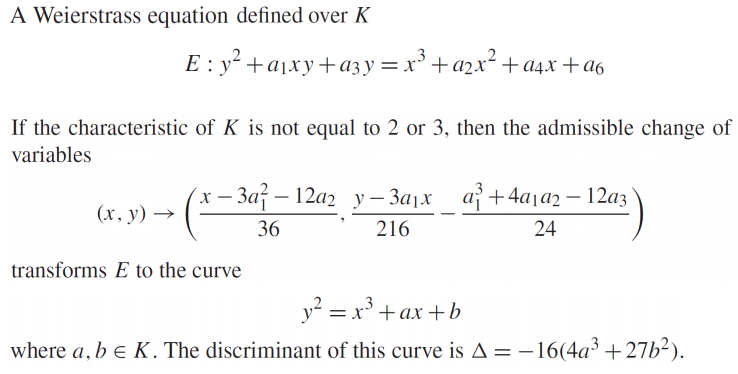
실수 상의 타원 곡선(Elliptic Curves over R)¶
- 실수(Real Numbers) 집합에 대한 정의
- 일반적으로 방정식 \(y^2 = x^3 + ax + b\) 의 형태
- 특정 조건 만족
- ex) \(4a^3 + 27b^2 != 0\)
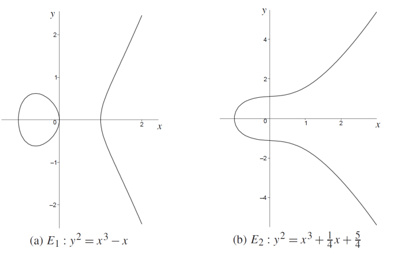
군 연산(Group Law)¶
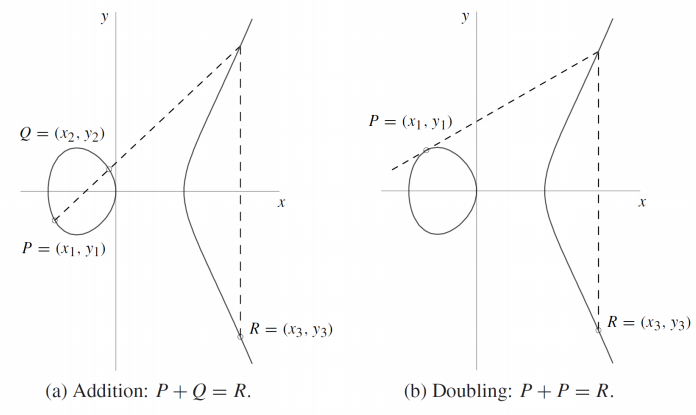
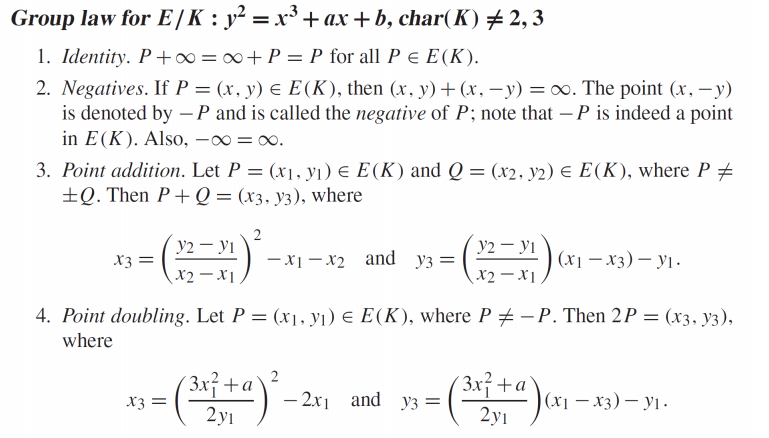
유한 필드 상의 타원 곡선(Elliptic Curves over Finite Fields)¶
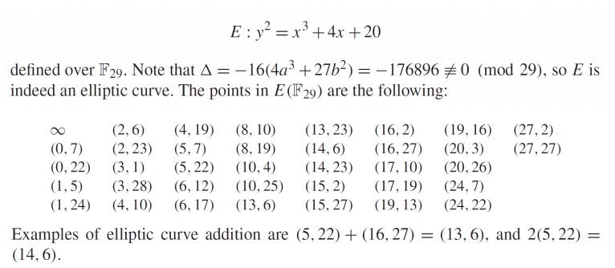
\(E_{23}(1, 1) : y^2 = x^3 + x + 1\) over \(F_{23}\)¶
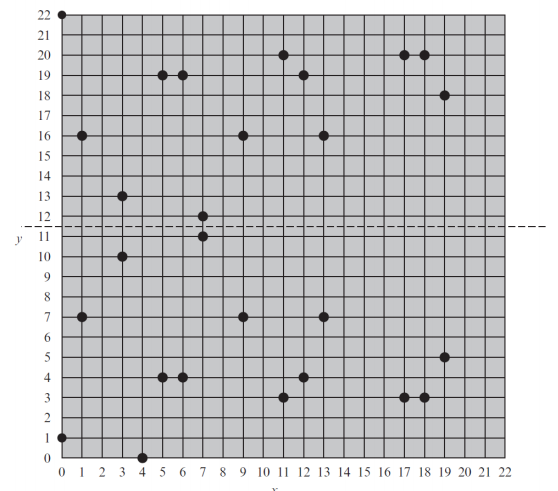
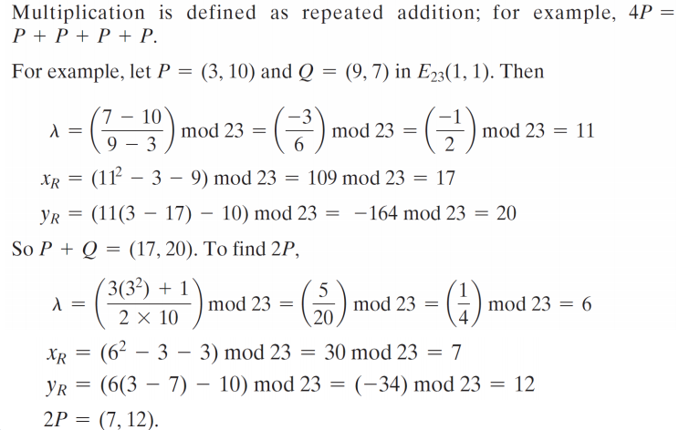
타원 곡선 상의 점 덧셈/배수 계산(Elliptic Curve Point Addition/Doubling)¶
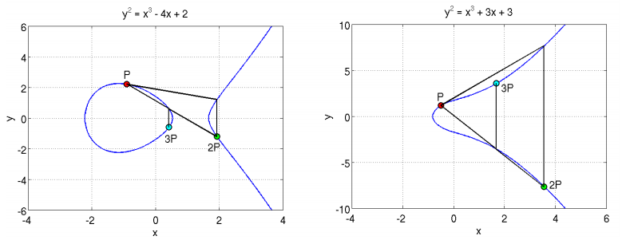
\(E _{61}(1,−1) : y^2 = x^3 − x\) over \(F_{61}\)¶
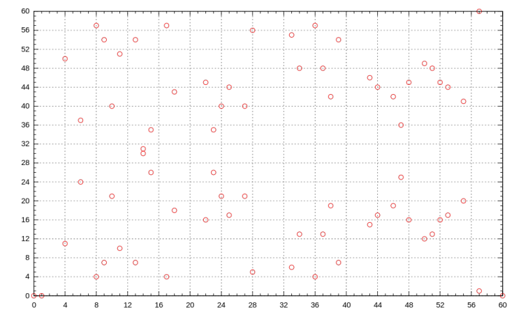
디피-헬만 타원 곡선(ECDH : Elliptic-Curve Diffie-Hellman)¶
스키마(Scheme)¶
-
Alice와 Bob은 큰 유한 필드 \(F\) 위에 정의된 타원 곡선 \(E\)와 \(E\) 상의 점 \(P\)에 합의
-
Alice는 임의의 정수 \(a\) 선택 후 \(pk_A = aP\) 를 Bob에게 전송
-
Bob은 임의의 정수 \(b\) 선택 후 \(pk_B = bP\) 를 Alice에게 전송
-
Alice는 \(a(pk_B) = a(bP) = abP\) 계산
-
Bob은 \(b(pk_A) = b(aP) = abP\) 계산
2절. 네트워크 보안(SSL / TLS)¶
TCP/IP 프로토콜 스택 내 보안 기능의 상대적 위치(Relative Location of Security Facilities in the TCP/IP Protocol Stack)¶
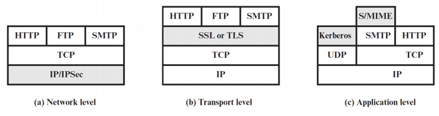
SSL 과 TLS¶
- 컴퓨터 네트워크를 통해 통신 보안을 제공하도록 설계된 암호화 프로토콜
- 버전 응용
- 웹 브라우징
- 이메일
- 인스턴트 메시징
- VoIP(Voice over IP)
보안 소켓 계층(SSL : Secure Sockets Layer)¶
- 더 이상 사용되지 않는 선구자격 프로토콜
- 넷스케이프(Netscape)의 초기 SSL 프로토콜 개발
- 1995년 ~ 1998년 넷스케이프 커뮤니케이션의 수석 과학자 타헤르 엘가말(Taher Elgamal)은 "SSL의 아버지" 취급
- SSL 1.0 버전은 프로토콜의 심각한 보안 결함으로 미공개
- 1995년 2월 출시된 SSL 2.0 버전은 여러 보안 문제 포함
- 1996년에 출시된 SSL 3.0 버전은 프로토콜의 완전한 재설계
| 프로토콜 | 출시일 | 상태 |
|---|---|---|
| SSL 1.0 | - | - |
| SSL 2.0 | 1995 | 지원 중단(2011) |
| SSL 3.0 | 1996 | 지원 중단(2015) |
전송 계층 보안(TLS : Transport Layer Security)¶
- TLS 1.0은 SSL 3.0의 업그레이드 버전
- 1999년 1월 RFC 2246에 처음 정의
-
RFC의 의견
-
TLS 1.0과 SSL 3.0의 차이는 크지 않음
-
하지만 TLS 1.0과 SSL 3.0 간 상호운용성을 방해할 정도로 중요한 차이점이 존재
-
TLS 1.1은 2006년 4월 RFC 4346에 정의
- TLS 1.2는 2008년 8월 RFC 5246에 정의
- TLS 1.3은 2018년 8월 RFC 8446에 정의
- PCI 위원회
- 조직들에게 2018년 6월 30일까지 TLS 1.0에서 TLS 1.1 이상으로 전환 권고
- 2018년 10월
- 애플, 구글, 마이크로소프트, 모질라
- 2020년 3월부터 TLS 1.0과 TLS 1.1을 지원하지 않을 것을 공동 발표
- 웹 사이트는 TLS로 서버와 웹 브라우저 간 모든 통신 보호 가능
- 목적(두 개 이상의 통신 어플리케이션 간)
- 개인정보 보호
- 데이터 무결성 제공
| 프로토콜 | 출시일 | 상태 |
|---|---|---|
| TLS 1.0 | 1999 | 지원 중단(2021) |
| TLS 1.1 | 2006 | 지원 중단(2021) |
| TLS 1.2 | 2008 | |
| TLS 1.3 | 2018 |
TLS 프로토콜¶
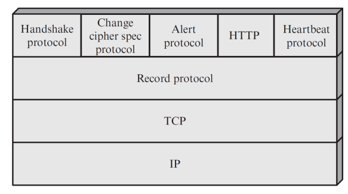
- 데이터를 특정 형식으로 캡슐화하여 교환하는 레코드 주고받음
- 레코드의 연결 상태
- 압축
- 패딩 추가
- 메시지 인증 코드(MAC) 추가
- 암호화
-
레코드의 구성
-
내용 유형(Content type) 필드 : 캡슐화된 데이터의 유형
- 길이 필드 : 데이터의 길이
-
버전 필드 : TLS 버전
-
TLS 핸드셰이크(TLS handshake)
- 데이터를 요청하는 클라이언트와 요청에 응답하는 서버 간 관계
- 암호 스위트 : 애플리케이션 데이터를 교환 시 필요
- 사양 : 키 등
TLS 기록 프로토콜(TLS Record Protocol)¶
-
핸드셰이크 프로토콜에서 정의된 공유 비밀 키로 두 가지 서비스 제공
-
기밀성(Confidentiality)
-
TLS 페이로드를 일반적인 방식으로 암호화
-
메시지 무결성(Message Integrity)
-
메시지 인증 코드(MAC) 생성
-
전체 동작
- 전송할 애플리케이션 메시지를 가져와 데이터를 관리 가능한 크기의 블록으로 분할
- 선택적 데이터를 압축
- MAC을 적용 후 암호화한 뒤 헤더 추가
- 최종적으로 데이터를 TCP 세그먼트로 전송
구조(Operation)¶
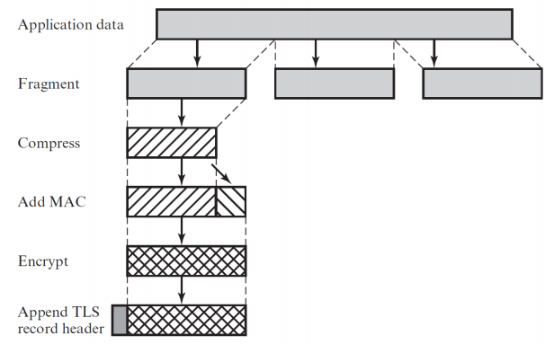
형식(Format)¶
- 내용 유형(Content type) : 8비트
- 주 버전(Major version) : 8비트
- 부 버전(Minor version) : 8비트
- 압축된 길이(Compressed length) : 16비트
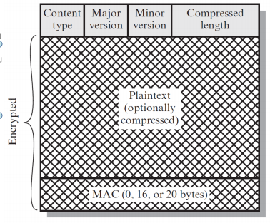
3절. TLS의 프로토콜 유형¶
변경 암호 사양 프로토콜(Change Cipher Spec Protocol)¶
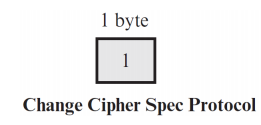
- TLS 레코드 프로토콜을 사용하는 네 가지 TLS 전용 프로토콜 중 하나
-
가장 간단한 프로토콜
-
구성
- 단일 메시지로 구성
- 메시지는 값 1을 가진 한 바이트
- 메시지 목적
- 대기 상태(pending state)를 현재 상태(current state)로 복사
- 연결에서 사용할 암호 스위트를 업데이트
경고 프로토콜(Alert Protocol)¶
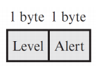
-
형식(Format)
-
각 메시지는 두 바이트로 구성
- 첫 번째 바이트 : 메시지의 심각도 전달을 위한 값 존재
- 경고(warning, 1)
- 치명적(fatal, 2)
- 치명적(fatal) 수준 : TLS 즉시 연결 종료
-
주요 경고 메시지 예시(Example)
- 예상치 못한 메시지(unexpected_message)
- 잘못된 레코드 MAC(bad_record_mac)
- 압축 실패(decompression_failure)
- 핸드셰이크 실패(handshake_failure)
- 잘못된 매개변수(illegal_parameter)
- 암호 해독 실패(decryption_failed)
핸드셰이크 프로토콜 (Handshake Protocol)¶
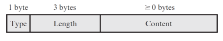
-
기능(Overview)
-
서버와 클라이언트 간 인증
- TLS 레코드에서 전송되는 데이터 보호를 위해 사용할 암호화 알고리즘
-
MAC 알고리즘 및 암호 키 협상하는 기능
-
메시지 구조 : 세 가지 필드
- 유형(Type, 1바이트) : 10가지 메시지 유형 중 하나
- 길이(Length, 3바이트) : 메시지의 길이를 바이트 단위로 표현
- 내용(Content, 0바이트 이상) : 메시지의 실제 내용 포함
TLS 핸드셰이크 프로토콜 메세지 타입¶
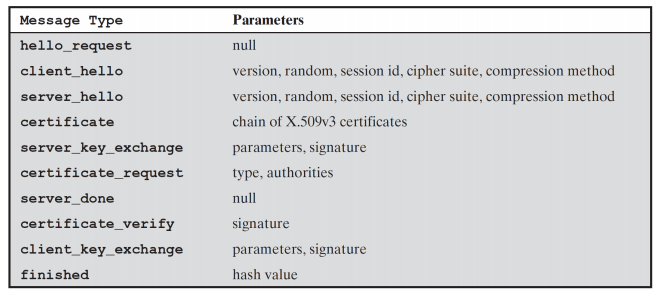
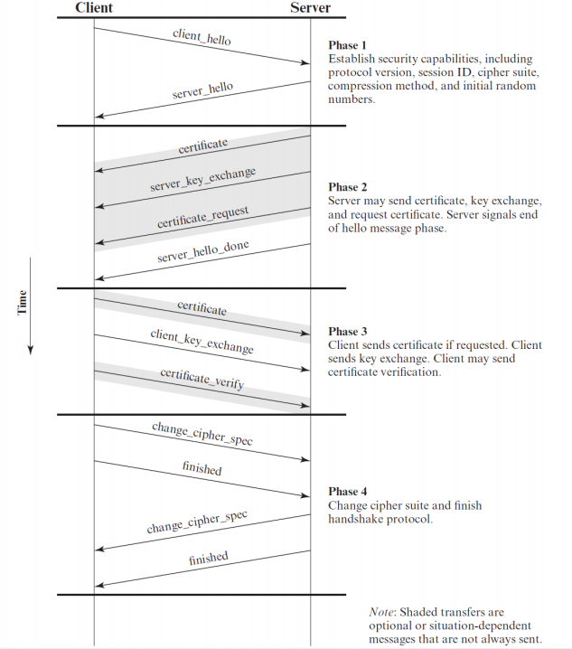
Hello Messages¶
- 클라이언트_hello or 서버_hello의 매개 변수들
- 버전(Version): 클라이언트가 이해하는 가장 높은 TLS 버전
- 랜덤(Random)
- 클라이언트가 생성한 랜덤 구조체
- 32비트 타임스탬프와 보안 랜덤 번호 생성기에서 생성된 28바이트로 구성
- 세션 ID(Session ID): 가변 길이의 세션 식별자
- 암호 스위트(CipherSuite) : 클라이언트가 지원하는 암호화 알고리즘 조합을 포함한 목록(선호도 순서대로 나열)
- 압축 방법(Compression Method) : 클라이언트가 지원하는 압축 방법 목록
CipherSuiteKey : 교환 방법 알고리즘(Exchange Method Algorithms)¶
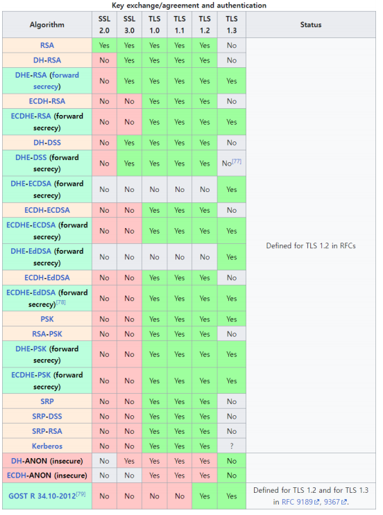
SSL Pulse(https://www.ssllabs.com/ssl-pulse/)¶
- 웹 사이트(Web Site)
- TLS의 주요 용도 : 웹사이트와 HTTP 프로토콜로 인코딩된 웹 브라우저 간의 월드 와이드 웹 트래픽 보호
- HTTPS 프로토콜 구성 == HTTP 트래픽을 보호하기 위해 TLS를 사용하는 것
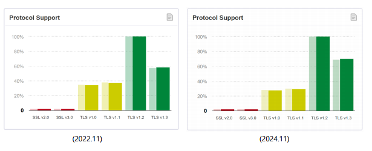
- 서버 SSL Pulse 모니터가 지원하는 가장 취약한 키 교환
- 현재 2048비트의 최소 예상 강도
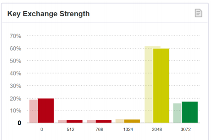